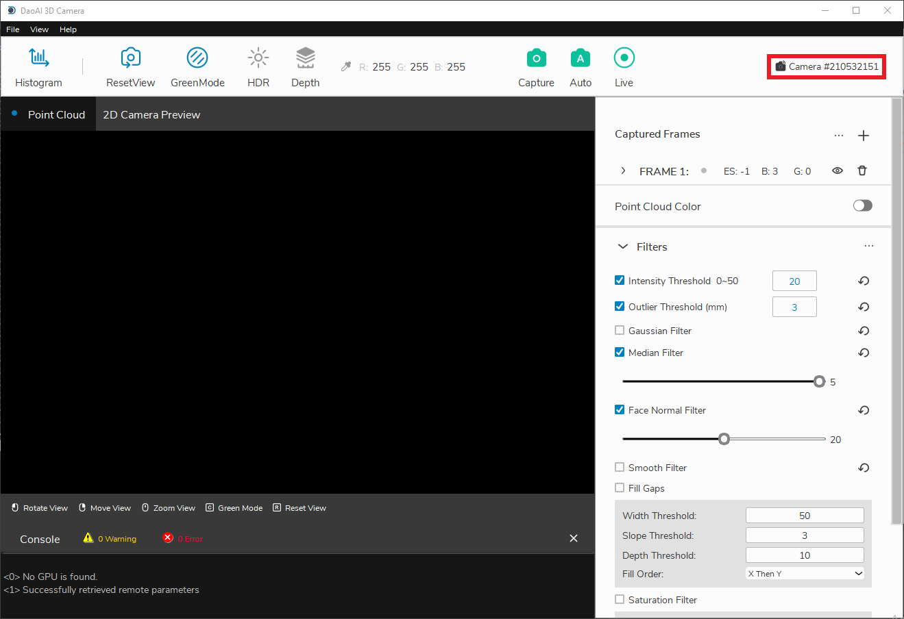

连接和断开相机的连接
使用DaoAI相机工作室的第一步是连接你的相机。
连接
当启动相机工作室时，首先你会看到 管理相机 窗口。

刷新按钮会更新所连接的相机列表。

如果你使用的是远程控制的相机，你必须勾选*启用远程相机*复选框，并在点击刷新前指定相机的IP地址。 相机的IP地址，然后再点击刷新。
- 远程相机的默认IP。
192.168.1.12: BP-L 相机, BP-M 相机, BP-S 相机, BP-AMR-GPU 相机, and IN 相机
192.168.1.2: BP-AMR 相机
一旦检测到您要连接的相机，请单击 连接 按钮。 如果有多台相机被连接，你可以从下拉列表中选择要连接的相机。

连接后，你应该看到主窗口。
备注
通常情况下，如果物理连接了多台相机，它们都会出现在相机选择列表中。 然而，DaoAI Camera Studio一次只支持与一台相机建立连接。 要使用DaoAI Camera Studio拍摄多个相机，请启动另一个DaoAI Camera Studio实例并连接其他摄像机。
断开连接
要断开相机的连接，首先点击主窗口右上方的相机ID。
从那里，你应该看到 管理相机 窗口，在那里你可以点击断开连接。